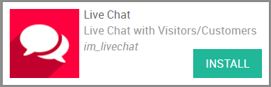
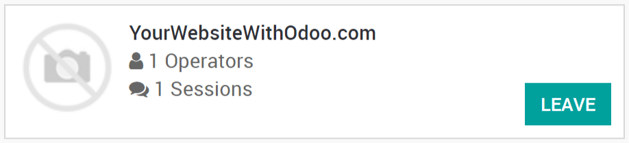
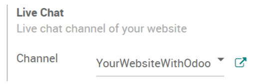
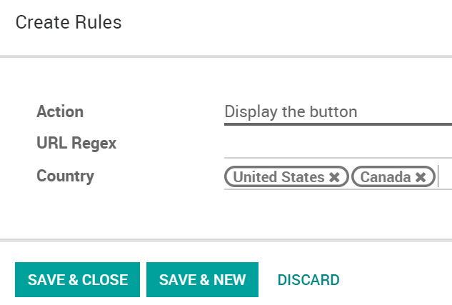
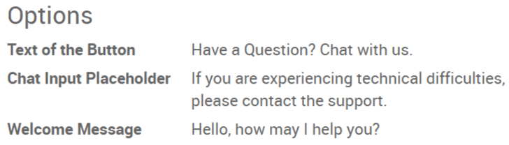
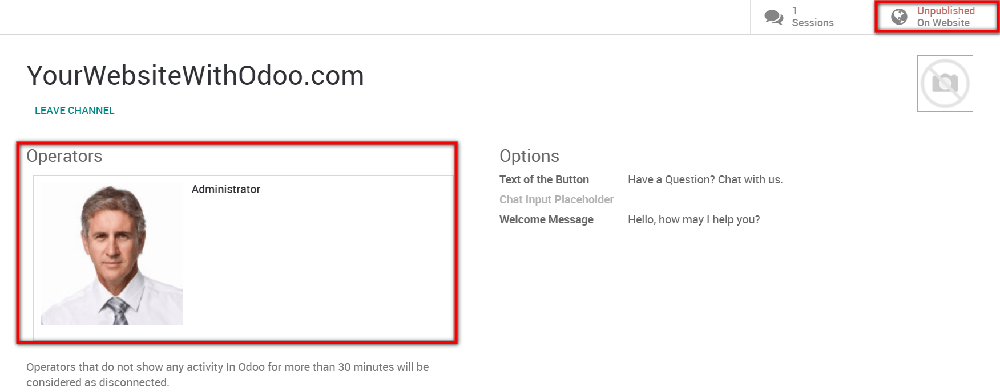
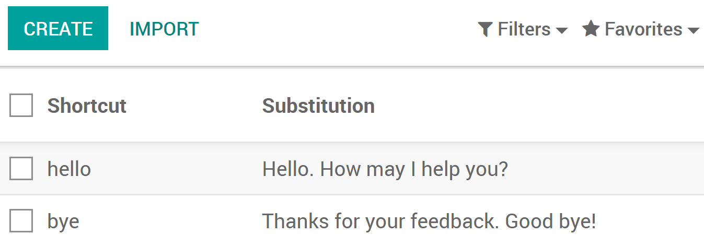

Chat in live with website visitors
With Odoo Live Chat, you can establish a direct contact with your website visitors. A simple dialog box will be available on their screen and will allow them to get in touch with one of your sales representatives. This way, you can easily turn prospects into potential business opportunities. You will also be able to provide assistance to your customers. Overall, this is the perfect tool to improve customer satisfaction.
Configuration
To get the Live Chat feature, open the Apps module, search for "Live Chat" and then click on install.
The Live Chat module provides you a direct access to your channels. There, operators can easily join and leave the chat.
Add the live chat to an Odoo website
If your website was created with Odoo, then the live chat is automatically added to it. All that is left to do, is to go to to select the channel to be linked to the website.
Add the live chat to an external website
If your website was not created with Odoo, go to the Live Chat module and then select the channel to be linked. There, you can simply copy paste the code available into your website. A specific url you can send to customers or suppliers for them to access the live chat is also provided.
Hide / display the live chat according to rules
Rules for the live chat can be defined on the channel form. For instance, you can choose to display the chat in the countries you speak the language of. On the contrary, you are able to hide the chat in countries your company does not sell in. If you select Auto popup, you can also set the length of time it takes for the chat to appear.
Prepare automatic messages
On the channel form, in the Options section, several messages can be typed to appear automatically on the chat. This will entice visitors to reach you through the live chat.
Start chatting with customers
In order to start chatting with customers, first make sure that the channel is published on your website. To do so, select Unpublished on Website on the top right corner of the channel form to toggle the Published setting. Then, the live chat can begin once an operator has joined the channel.
Note
If no operator is available and/or if the channel is unpublished on the website, then the live chat button will not appear to visitors.
In practice, the conversations initiated by the visitors will appear in the Discuss module and will also pop up as a direct message. Therefore, inquiries can be answered wherever you are in Odoo.
If there several operators in charge of a channel, the system will dispatch sessions randomly between them.
Use commands
Commands are useful shortcuts for completing certain actions or to access information you might need. To use this feature, simply type the commands into the chat. The following actions are available :
/help : show a helper message.
/helpdesk : create a helpdesk ticket.
/helpdesk_search : search for a helpdesk ticket.
/history : see 15 last visited pages.
/lead : create a new lead.
/leave : leave the channel.
Note
If a helpdesk ticket is created from the chat, then the conversation it was generated from will automatically appear as the description of the ticket. The same goes for the creation of a lead.
Send canned responses
Canned responses allow you to create substitutes to generic sentences you frequently use. Typing a word instead of several will save you a lot of time. To add canned responses, go to and create as many as you need to. Then, to use them during a chat, simply type ":" followed by the shortcut you assigned.
You now have all of the tools needed to chat in live with your website visitors, enjoy !